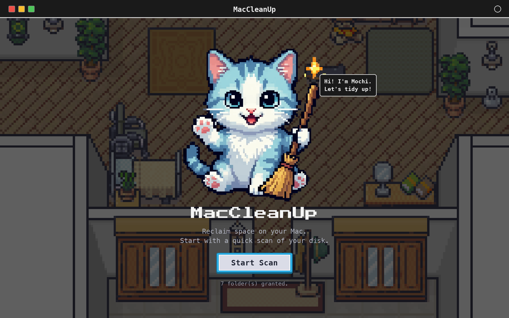
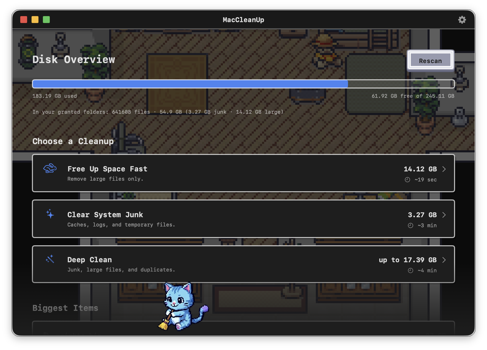
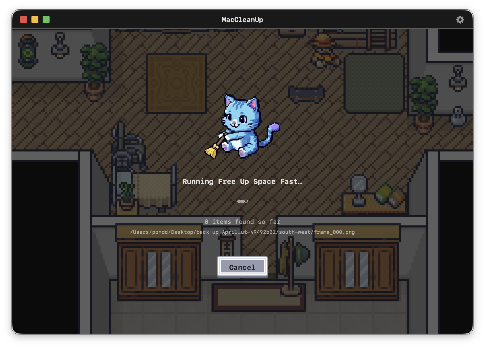

Find junk, big files and duplicates — then tidy up in a couple of clicks. Everything goes to the Trash, so every clean is reversible. With a little help from Mochi.
Sandboxed & on-device · Collects no data · macOS 14+
Three kinds of clutter, swept up safely.
Caches, logs and temporary files that quietly pile up over time.
The big space-hogs hiding in your folders — surfaced biggest-first.
Byte-for-byte identical copies you don't need twice.
Every plan shows an estimate of what you'll reclaim before you start.
Jump straight to the biggest files and clear them in seconds.
Sweep out caches, logs and temp files in one pass.
The full sweep: junk, large files and duplicates together.
A cozy, pixel-art home for tidying yours.


